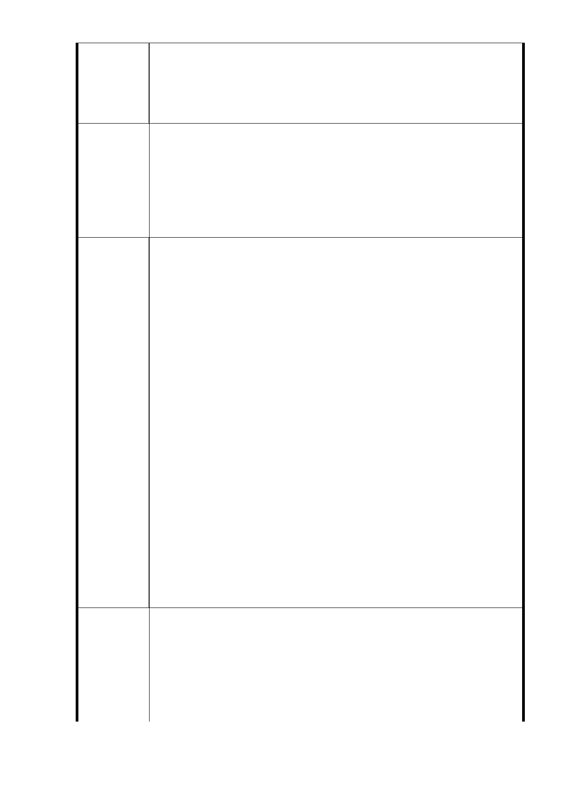

3. 開發案應以創造全體長遠最大利益為宗旨進行整體審視規劃
，不應受限於現有隸屬機構之分佈，若不顧現有環境條件而
徑行擁地分割屬地規劃，將造成整體開發效益低落、傷害民
眾利益，還因此撕裂社區祥和與群體凝聚、甚至產生額外補
償成本，於繳稅大眾、於在地居民，皆非良策。
開發案整體規劃應跳脫隸屬主管機關分佈迷思，以周邊現有建物
功能、路寬、衝擊影響、以及未來使用強度等，重新思考最佳分
建議辦法
佈：商業靠近大馬路（福德街），公園以ㄇ型綠帶以及留存現有
樹木間隔於住宅巷弄（福德街 84 巷、林口街 80 巷、大道路），
社福設施與平宅位於基地中央。如此才能讓開發建設對原住戶與
原生態衝擊最小，創造最大開發效益。示意圖請見下點說明。
議題三：開發強度將容積率由 2 25 ％調整為 400 %
1. 自前次規劃案至今，本區域完全無任何新建設施，公共設施
服務水準並無任何提升，之前所評估比照鄰近第三種住宅區
容積率 225％的條件並無任何改變，何以得調高為 400%?
2. 即使「滿足市民基本居住需求」為政策，仍須搭配其他配套
措施，例如停車位新增、道路拓寬、環保提撥回饋或是綠建
築規範等等相關開發強度規定，何以只見單方面提高卻不見
其他具體配套規範（此規定案中關於道路拓寬仍維持原定，
並無增加其他，無法滿足容積率提高的部份）?
3. 此調整對於正面面對基地、勢必遭受最大開發衝擊的林口街
80 巷居民，影響最劇。不但須承受開發時的噪音空污、建造
陳 情 理 由 完成後的完全無日照與惱人風切，還得擔心高容積率建物開
挖地基，對超過 40 年老舊建物的嚴重安全疑慮，更遑論林口
街 80 巷是本開發案所鄰四條道路中最狹窄者，僅 8 米寬而且
還是居民所共同持分（非公有地）。繳納同樣的稅，為何遭受
如此對待？有為的政府不應為了某些族群打造樂園，卻製造
出另一群體的問題，而能創造的價值在哪都還看不到（甚至
是拿著應跳脫營利思維的公有土地換的），更諷刺的是，還打
著社會福利與公益住宅的名號！如果市府以此定案執行，還
不見帶動地區經濟發展，就將先創造出更多需要社會照顧的
群體—這群林口街 80 巷上百戶近 500 位常年見不到陽光、被
惱人風切、地層錯動房子歪斜裂開漏水逼瘋的憂鬱重症居民
。
如前述建議辦法所言，將公園改為ㄇ型綠帶（請見下面示意圖）
，尤其針對巷道最窄僅 8 米寬的林口街 80 巷，若容積率為 400%
建議辦法
，則人行步道與綠帶規劃距離路邊（非距離住宅，亦即扣除巷道
寬度）至少須有 50 米以上的寬度；若維持容積率為 225%，則
距離路邊亦至少有 25 米以上之寬度，以降低開發建物對現有居
民之負面衝擊與長期不良影響。
- 49 -